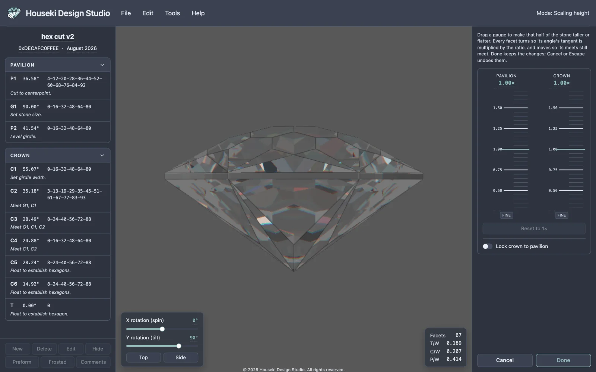
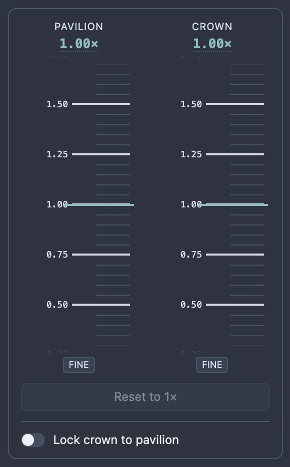
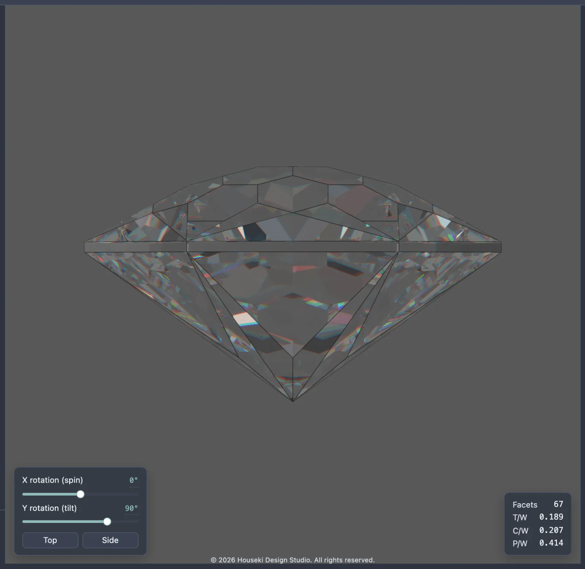
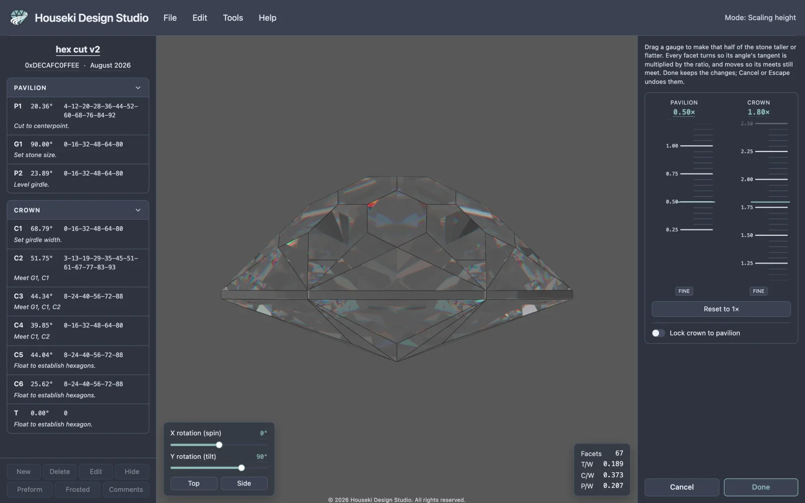
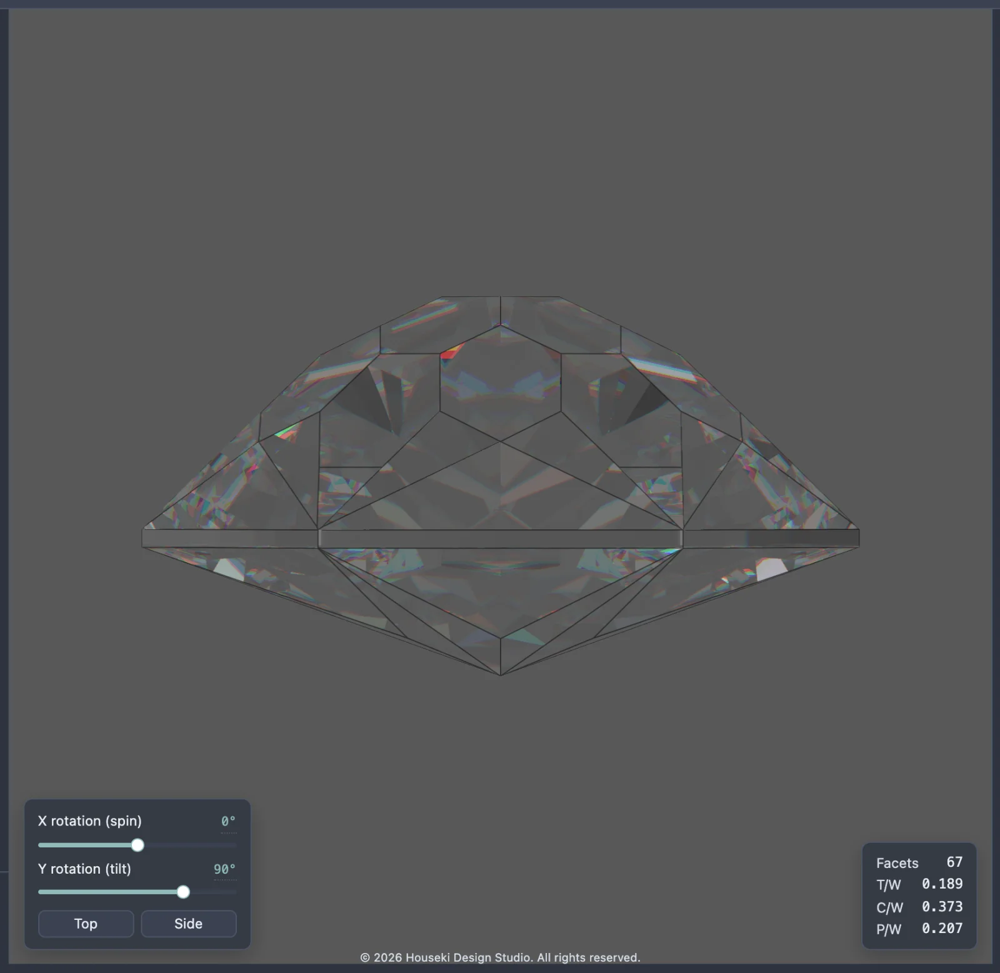
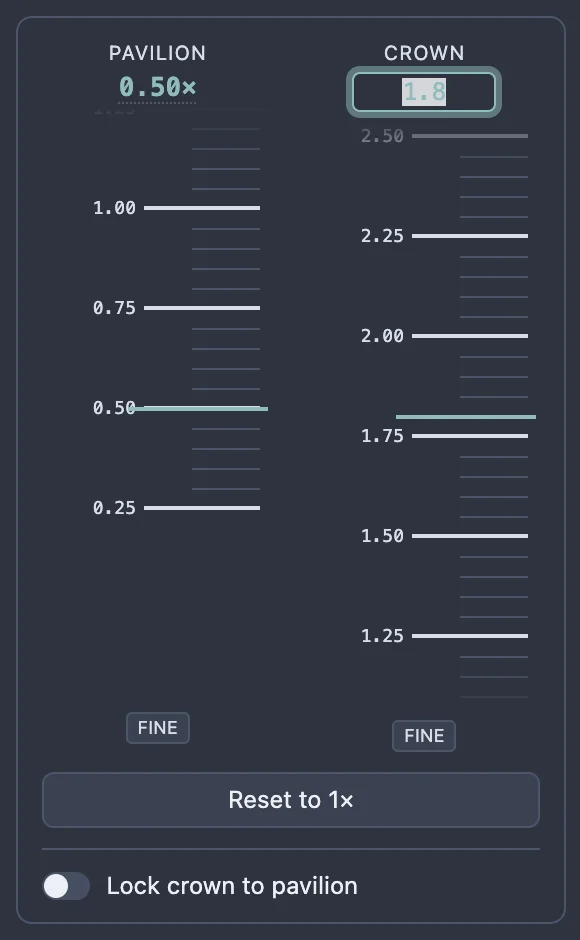
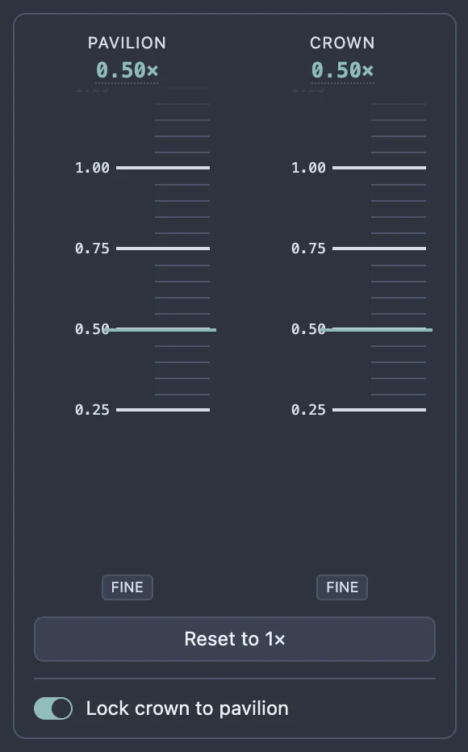
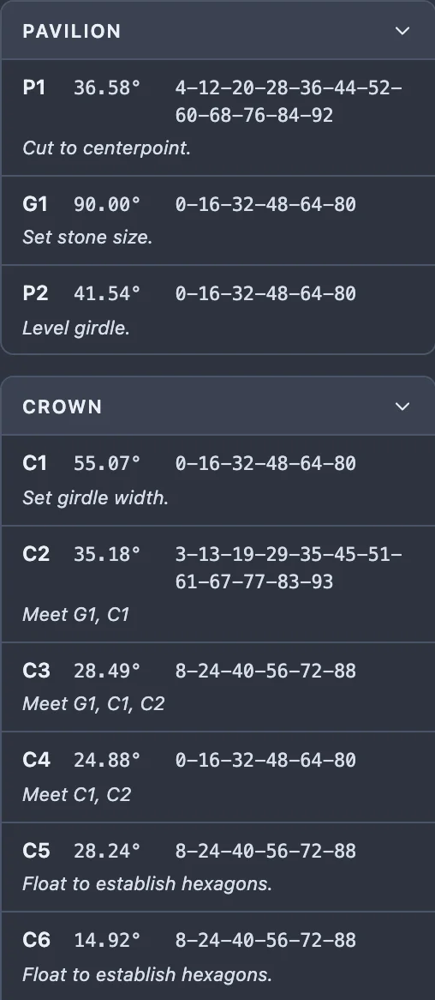
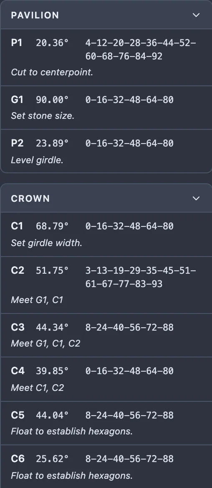

Tangent ratio scaling makes the crown or the pavilion of your stone taller or flatter, on its own, without touching the other half, the girdle's outline, or the index teeth. Every facet in that half changes its angle together, and the studio moves each one just enough that all its meets still meet — so the stone keeps the same silhouette and the same cutting sequence, only standing taller or squatter. A cutter reaches for this to fit a rough that came out shallower or deeper than the design expects, or to adjust a design's proportions for a stone of a different refractive index, without reworking every angle in the cutting instructions by hand.

Choose Edit > Scale height from the menu bar.
The menu item is greyed out, with a tooltip explaining why, when there's no design loaded, or when another mode — editing a tier, resizing the girdle, the cutting assistant, or scale height itself — is already open. Finish or leave that mode first (its own Done, Cancel, or Escape), then open scale height.
Once it opens, the top bar's mode readout, at the right-hand end, reads Scaling height — a reminder, from anywhere on the page, that you're scaling rather than looking at your finished design.
The stone turns to the same side-on view as the render pane's own Side button — crown up, the girdle seen edge-on — since that's the angle a height change actually shows up from. You can still orbit and zoom while the mode is open; whichever way you leave it, the view snaps back to wherever it was pointed before you opened scale height, even if you moved the camera in between.
On the left, the cutting instructions pane stays exactly as usual, so you can watch every tier's angle follow the gauges as you drag them. On the right, in place of the render settings, is the scale height panel:

Drag a gauge's tape downward to make that half of the stone taller (a larger ratio); drag it upward to make it flatter (a smaller ratio) — the same way pulling a strip of paper down brings its larger numbers to the centre line. The Pavilion and Crown gauges move independently unless you turn on Lock crown to pavilion (see below), so you can make one half taller while making the other flatter in the same session.



| Gesture | Does |
|---|---|
| Drag the tape | Scales that half live as you move the pointer; the stone and the cutting instructions follow. Releasing the pointer records one step you can undo. |
| Scroll the wheel over a gauge | Nudges it directly; each notch is applied and recorded immediately, so several notches in a row make that many undo steps. |
| ↑ / ↓ (gauge focused) | Moves by 0.01×, applied and recorded immediately. |
| Page Up / Page Down | Moves by 0.25×, one major tick. |
| Home | Jumps to the top of the tape, 4× — the tallest the gauge goes. |
| End | Jumps to the bottom of the tape, 0.25× — the flattest. |
| Click the gauge's reading | Opens a text box to type an exact ratio. Enter, or clicking away, applies it; Escape cancels just the typing, without leaving the mode. |
| Hold Shift while dragging, or click the gauge's own Fine button first | Moves the tape a fifth as far as the pointer, for finer placing. Fine stays on until you click it again; Shift only applies while it's held. |

Reset to 1× puts both gauges back to 1× in one step — it leaves the lock switch as it was, since that's a separate choice. It's greyed out (with a tooltip saying so) whenever both gauges already read 1×.
Lock crown to pavilion ties the two gauges together: once it's on, dragging either one moves both by the same amount, to the same ratio. Turning it on immediately brings the crown to whatever ratio the pavilion is already at.

Scaling a half changes every one of its tiers' angles by the same rule — a larger ratio turns a facet's angle up, a smaller one turns it down — while the table and the girdle keep their own angles exactly, and every tier's index teeth and notes are untouched. Continuing the 0.50× pavilion / 1.80× crown example above, the cutting instructions pane shows:
| Tier | Angle at 1.00× | Angle after scaling |
|---|---|---|
| P1 | 36.58° | 20.36° |
| G1 (girdle) | 90.00° | 90.00° — unchanged |
| P2 | 41.54° | 23.89° |
| C1 | 55.07° | 68.79° |
| C2 | 35.18° | 51.75° |
| C3 | 28.49° | 44.34° |
| C4 | 24.88° | 39.85° |
| C5 | 28.24° | 44.04° |
| C6 | 14.92° | 25.62° |
| T (table) | 0.00° | 0.00° — unchanged |
The pavilion tiers' angles all dropped (flatter, at 0.50×) and the crown tiers' angles all rose (taller, at 1.80×), while the girdle and the table stayed exactly where they were.


While scale height is open, the cutting instructions can't be reordered or edited, and the other tier tools are unavailable — the mode holds the whole design until you leave it with Done, Cancel, or Escape.
Either way out restores the view you had before you opened scale height, and the render settings panel comes back in place of the gauges.

While scale height is open, Undo and Redo — the Edit menu's items, and Cmd+Z / Ctrl+Z and Shift+Cmd+Z / Ctrl+Shift+Z (or Ctrl+Y) — step through changes made to the two gauges and the lock only: a drag's release, a wheel notch, a key press, a typed value, a Reset, or a lock toggle each count as one step. This local undo has nothing to do with the rest of your edit history until you click Done.
Done folds the whole session into a single step of the studio's own Undo: pressing Cmd+Z / Ctrl+Z afterwards puts every tier straight back to how it stood before you opened scale height, in one step, whatever number of drags, scrolls or typed values it took to get there; Shift+Cmd+Z / Ctrl+Shift+Z brings the whole change back the same way.
| Gesture / key | Where | Does |
|---|---|---|
| Click | Edit > Scale height | Opens the mode |
| Drag | A gauge's tape | Scales that half live; releasing records the edit |
| Scroll wheel | A gauge's tape | Nudges it 0.01×, recorded immediately |
| ↑ ↓ | A gauge, focused | 0.01× a step, recorded immediately |
| Page Up Page Down | A gauge, focused | 0.25×, one major tick |
| Home | A gauge, focused | Jumps to 4×, the tallest |
| End | A gauge, focused | Jumps to 0.25×, the flattest |
| Click | A gauge's reading | Opens a text box to type an exact ratio |
| Enter | While typing a ratio | Applies it |
| Escape | While typing a ratio | Cancels the typing only |
| Hold Shift while dragging, or click Fine | A gauge's tape | Fine adjustment: a fifth as far as the pointer |
| Click | Reset to 1× | Both gauges back to 1×, one step |
| Click | Lock crown to pavilion | Ties the gauges together, bringing the crown to the pavilion's ratio |
| Click | Done | Keeps the scaling, as one step of Undo, and leaves the mode |
| Click | Cancel | Discards the scaling and leaves the mode |
| Escape | Anywhere in the mode, outside a text box | Same as Cancel |
| Cmd+Z / Ctrl+Z | Anywhere outside a text box | Undo — the gauges while the mode is open, or the whole session after Done |
| Shift+Cmd+Z / Ctrl+Shift+Z, or Ctrl+Y | Anywhere outside a text box | Redo |